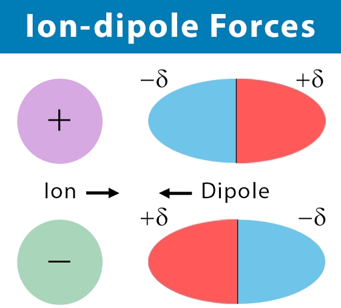

Lesson #1: INTERMOLECULAR FORCES (IMF)
Intermolecular Forces (IMF)
In chemistry, if a molecule is exposed or placed near to another molecule the tendency is that they get attracted and build up a force that will hold them together. The force between these molecules will greatly affect some of their physical properties such as melting point and boiling points. What do you think are these forces that hold together one molecule to another molecule? We call these forces as intermolecular forces.
https://encrypted-tbn0.gstatic.com/images?q=tbn:ANd9GcTpp3mYS7Y0fyRxacitoSG9ZH34SK-vBb711Q&usqp=CAU
Definitions
- Intermolecular forces - The interaction between molecules (substances that are made of atoms that bond through the sharing of electrons to form covalent bonds).
- A – Ion-dipole Forces - These forces exist when polar molecules are attracted to ions. The positive pole is attracted to a negative ion (anion), while the negative pole is attracted to a positive ion (cation). 
- Ion-dipole interactions are involved in solution processes like in the case of sodium chloride dissolving in water.
- B – Dipole-dipole Forces - is the attraction of bond dipoles in different molecules. Bond dipoles arise from the unequal sharing of electrons by covalently bonded atoms.
- When we say dipole-dipole interaction, we are referring to the interaction of the two dipole molecules such as between molecules of carbon monoxide, hydrochloric acid, and nitrogen trifluoride. Wherein the two poles of each molecule is either partially positive or partially negative.
- C- Hydrogen Bond or Hydrogen Bridge- The strength of the hydrogen bonding depends on the extensiveness or number of formed hydrogen bonds and the polarity of the bond. The arrangement of the strength of the hydrogen bond is H-O< H-N <H-F because H-F is a highly polar molecule.
- These intermolecular forces are weaker than either ionic or covalent bonds, but their importance cannot be underestimated. They are responsible for determining whether a molecular compound is a gas, a liquid or a solid at a given temperature.
- D – London Dispersion Forces (LDF) or London Forces, or simply Dispersion Forces - This type of interaction happens to be present in all types of molecules whether ionic or covalent-polar, or nonpolar. However, this type of intermolecular force is significant in nonpolar molecules and the force is developed due to the uneven distribution of electrons and create a temporary dipole.
- This type of force is a very weak type of dipole interaction. The force between these molecules increases with the polarizability (squishiness of a molecule), molecular size (more electrons), and pi bonding (overlapping of orbitals).
https://encrypted-tbn0.gstatic.com/images?q=tbn:ANd9GcQjoZZIXph-7UyMihMI3Qy2zfBV1WKZg8HZNg&usqp=CAU
https://encrypted-tbn0.gstatic.com/images?q=tbn:ANd9GcReGxksfLXgw4Yt3Brc3-UDcCOkkIRLPSDZMQ&usqp=CAU
https://encrypted-tbn0.gstatic.com/images?q=tbn:ANd9GcTFP2eN7ECR5aBlRc1J9tpGc6KDAYJtQ85Daw&usqp=CAU
https://encrypted-tbn0.gstatic.com/images?q=tbn:ANd9GcTzUbPGy0sMvTO5tFT_yUL5SSrlxW-HFjqBxg&usqp=CAU